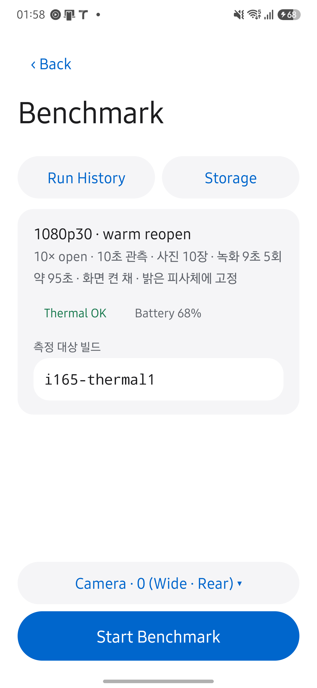
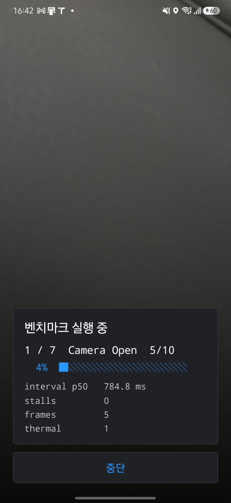
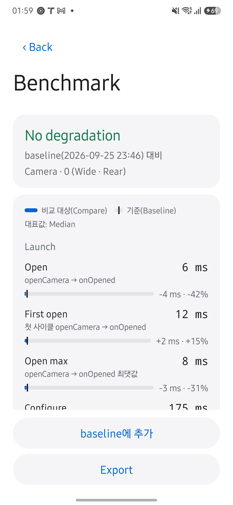
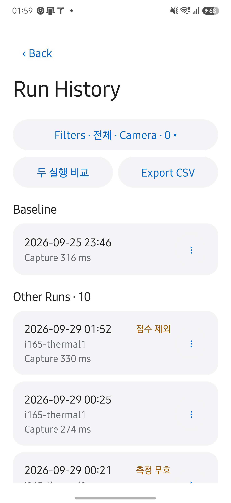

HAL CAMERA / User Guide
Measurements with meaning.
같은 조건에서 측정한 실행을 비교하세요. Benchmark는 카메라 열기, 프리뷰, 촬영, 녹화에 걸린 시간과 콜백을 기록합니다. 결과 화면에서 baseline 대비 변화를 읽고, 실행 기록에서 비교 대상을 선택하거나 파일을 내보낼 수 있습니다.
아래 화면은 2026년 9월 29일 Galaxy S25+·Android 16에서 HAL CAMERA 0.15.0을 실행해 촬영했습니다. 촬영 조건과 확인 범위를 함께 확인하세요. 이미지를 누르면 원본이 열립니다.
실행 조건을 확인하세요
- Live의
Lab → Benchmark에서 카메라와 profile을 확인하고 실행합니다. - 실행이 끝나면 판정과
실행 정보를 확인합니다. 측정이 무효이거나 표본이 부족하면 성능 저하로 해석하지 않습니다. - 아래 표에서 비교 기준을 고릅니다.
비교 기준을 고르세요
baseline은 성능 변화를 판단할 기준 실행입니다. 반복 측정에서는 정상 실행을 다섯 개 이상 추가하기를 권장합니다.
| 상황 | 기준 | 결과 |
|---|---|---|
| 처음 측정했습니다. | 비교할 실행이 없습니다. | 측정값만 봅니다. |
| baseline을 지정하지 않았습니다. | 이전의 비교 가능한 실행입니다. | 변화량만 표시합니다. 저하·개선은 판정하지 않습니다. |
정상 실행을 baseline에 추가했습니다. |
추가한 정상 실행들의 집합입니다. | 집합의 가장 나쁜 값보다 임계값 이상 나쁠 때 저하로 판정합니다. |
실행 기록에서 두 실행 비교를 골랐습니다. |
먼저 고른 실행을 이번 비교에만 씁니다. | 그 실행을 기준으로 저하·개선을 판정합니다. 저장된 baseline은 바뀌지 않습니다. |
3A(AE·AF·AWB 수렴)는 장면에 따라 값이 크게 달라집니다. 3A는 변화량만 표시하며 저하로 판정하지 않습니다.
| 조건 | 비교할 때 확인할 내용 |
|---|---|
| 카메라와 profile | camera2-standard-v1과 녹화를 포함하는 camera2-standard-v2는 서로 비교하지 않습니다. v2의 baseline은 기기별로 새로 지정합니다. |
| 관측 창과 워밍업 | 카메라를 다시 여는 반복 측정과 프리뷰 관측 세션은 구분됩니다. 관측 시작 전에 도착한 프레임은 워밍업으로 제외합니다. |
| 유효성과 환경 | 표본 수, 발열, 충전 상태, 빌드 정보를 실행 정보에서 확인합니다. 비교 조건이 맞지 않으면 이유를 표시합니다. |
실제 화면 보기


실제 화면 보기


진행 화면은 단계 제목 아래에 준비·첫 프레임 대기·관측·촬영·저장 상태를 짧게 표시합니다. 워밍업과 관측에는 경과 시간과 예정 시간을, 사진에는 현재 촬영 순서를 표시합니다. 녹화 프레임 수는 현재 회차의 capture_result를 집계하므로 새 회차에서 초기화됩니다. 진행률은 표시용 추정치이며 측정값이나 점수의 입력이 아닙니다.
camera2-standard-v2는 사진 촬영을 마친 뒤 카메라를 닫지 않고 9초 녹화를 다섯 번 반복합니다. 첫 회를 워밍업으로 제외하므로 녹화 지표의 유효 표본은 네 개이며, 이때 p95는 사실상 최대값입니다. 녹화를 마지막에 실행하므로 녹화 세션 구성의 영향이 앞선 프리뷰 관측과 촬영 지연에 섞이지 않습니다.
녹화 표본이 부족하면 녹화 측정이 부족함 flag가 붙습니다. 해당 flag만으로 측정 전체가 무효가 되지는 않으며 내부 비교는 가능하지만 교차 기기 점수에서는 제외됩니다. 카메라가 녹화 스트림 조합을 거부하면 남은 녹화 회차는 실행하지 않습니다.
판정과 막대를 읽으세요
판정을 먼저 읽고, 달라진 지표를 확인하세요. 막대만 보고 성능 저하를 판단하지 마세요.
시간 지표 한 줄 읽기 · 설명용 예시
- 막대 · 이번 값
- 120 ms
- 눈금 · 기준 값
- 100 ms
- 변화량
- +20 ms (+20%)
| 판정 | 의미와 다음 행동 |
|---|---|
Measurement invalid |
측정 유효성 조건을 충족하지 못했습니다. 실행 정보에서 무효 사유를 확인하고 조건을 바로잡은 뒤 다시 측정하세요. |
First run |
비교할 실행이 없습니다. 이번 조건과 측정값을 확인하고 같은 조건으로 다음 실행을 측정하세요. |
This run is the baseline |
현재 실행이 기준입니다. 비교할 다른 실행을 선택하세요. |
No baseline |
이전 실행과의 변화량만 보입니다. 저하 판정이 필요하면 정상 실행을 baseline에 추가하세요. |
No verdict |
기준은 있지만 비교 조건을 충족한 지표가 없습니다. 실행 정보에서 비교 불가 사유를 확인하세요. |
N metrics degraded |
저하된 지표가 N개입니다. 해당 지표와 실행 조건 차이를 확인하고 같은 조건에서 재현되는지 측정하세요. |
No degradation |
판정한 지표에는 저하가 없습니다. 제외된 지표와 경고도 확인하세요. 모든 HAL 동작이 정상이라는 뜻은 아닙니다. |
실제 화면 보기


지표는 Launch·Preview·Capture·Stability·Record·3A로 묶습니다. 막대는 비교 대상의 값, 눈금은 baseline 또는 이전 실행의 값입니다. 시간 값의 대표값은 중앙값이며, 각 지표 아래에는 측정한 Camera2 구간을 표시합니다. 지표 정의는 METRICS.md를 확인하세요. Benchmark의 Partial은 onCaptureStarted → onCaptureCompleted 구간을 뜻하며, Camera2의 중간 메타데이터 콜백인 onCaptureProgressed를 뜻하지 않습니다.
| 표시 | 읽는 방법 |
|---|---|
| 막대 길이 | 같은 묶음에서 단위가 같은 지표끼리 축을 공유하며, 이번 실행의 최댓값이 트랙의 80%에 옵니다. 단위가 다른 행이나 다른 묶음의 길이는 직접 비교하지 않습니다. |
| 별도 축 | 묶음에서 단위가 하나뿐인 지표와 Jitter·Record jitter는 자체 축을 씁니다. |
| 끝의 ▸ | 기준 값이 표시 범위를 넘었습니다. |
| 변화량 | 시간·비율 지표는 절댓값과 변화율을, 개수 지표는 절댓값만 표시합니다. 단위가 다르면 변화율을 표시하지 않습니다. |
| 빨강·초록·회색 | 각각 저하, 개선, 판정하지 않은 변화를 뜻합니다. 이전 실행과의 비교는 회색으로 표시합니다. |
timeout |
3A가 관측 창 안에 수렴하지 않았습니다. 현재 값의 막대는 비우며, 기준 값이 timeout이면 눈금과 변화량을 표시하지 않습니다. |
Baseline에만 있음 |
기준 실행에만 값이 있습니다. 현재 값은 —로 표시하고 기준 눈금은 남깁니다. |
조건 불일치·표본 부족 |
해당 지표를 판정하지 못한 이유입니다. |
Stalls·Callback fail·Record stalls는 막대 없이 개수를 표시하며, 기준과 같으면 변화량을 생략합니다. 0.1 ms보다 작은 시간 값은 µs로, 1 µs보다 작으면 ns로 표시합니다.
Frame rate는 프리뷰 간격 지표 H.1의 역수이며 판정은 H.1에 따릅니다. Record fps는 녹화 시작 3초를 제외한 뒤 1초 창에서 관측한 프레임 수를 바탕으로 계산하며, 값이 낮아질 때 저하로 판정합니다. Stalls와 Record stalls는 기준의 1.5배를 넘은 프레임 간격의 횟수이고, Jitter와 Record jitter는 간격의 편차입니다. 이 수치만으로 HAL 내부의 프레임 손실을 확정할 수는 없습니다.
실행 정보에는 기기, 카메라, OS 빌드, subject, 표본 수, 발열, 비고, 파일과 비교 기준의 정보가 있습니다. validity flag는 화면에서는 뜻을 풀어 쓰고 JSON과 CSV에는 원래 코드를 유지합니다. 내보내기로 결과 파일을 공유합니다.
실행 기록에서 비교하고 내보내세요
실행 기록은 지정된 baseline을 위에, 나머지 실행을 최신순으로 표시합니다. 각 행에는 실행 시각과 촬영 지연, 카메라가 나오며 빌드 이름을 입력했다면 한 줄이 추가됩니다. 카메라 하나로 필터링한 목록에서는 행마다 카메라 이름을 반복하지 않습니다.
| 배지 | 의미 |
|---|---|
▲ N degraded |
지정된 baseline 대비 N개 지표가 저하되었습니다. |
측정 무효·비교 불가·점수 제외 |
판정이 없을 때 적격성을 충족하지 못한 단계를 표시합니다. |
| 없음 | 저하나 적격성 경고가 없는 실행이거나, 별도 Baseline 묶음에 있는 실행입니다. |
두 실행 비교를 누릅니다.- 기준으로 쓸 실행을 먼저 고릅니다.
- 비교할 실행을 고릅니다. 취소나 뒤로 가기로 선택을 해제할 수 있습니다.
| 할 일 | 조작 |
|---|---|
| 실행 하나를 관리합니다. | 행의 ⋮ 메뉴를 누르거나 길게 누릅니다. baseline 추가·빼기, 비교, JSON·CSV 내보내기, 삭제를 고릅니다. |
| 실행을 삭제합니다. | 확인 후 삭제하며, baseline에서도 빠집니다. |
| 현재 목록을 내보냅니다. | 목록 CSV 내보내기를 누릅니다. 현재 필터에 맞는 실행을 CSV 하나로 저장합니다. |
실제 화면 보기


기본 상태 필터는 전체이므로 중단·무효 실행도 보입니다. 찾는 실행이 없으면 profile·camera 조건을 확인하거나 필터 초기화를 누르세요. PC의 tools/aggregate.py는 기본적으로 점수 산정 가능한 실행만 내보내므로 전체 실행이 필요하면 --eligibility all을 사용합니다.
저장 직후에는 설정 → 최대 보관 개수를 적용해 오래된 실행부터 삭제합니다. 한도는 10부터 100까지 10 단위로 선택하거나 무제한으로 지정하며 기본값은 무제한입니다. baseline에 든 실행은 자동 삭제하지 않습니다. 손상된 JSON은 별도로 알리며, baseline 파일을 읽지 못하면 baseline 변경과 삭제를 중단합니다.
반복·실패·중단 순서는 벤치마크 실행 상태도, 저장 후 비교 시점은 비교 계산 흐름을 확인하세요.
구현과 검증 범위를 확인하세요
실행 순서와 저장 경로는 Architecture, 표본 누락과 시각 해석은 Troubleshooting에 있습니다. 이 페이지는 코드에 따른 사용법이며 기기 실측 결과는 Validation에서 별도로 확인합니다.
코드 근거를 확인하세요
실행과 조립은 benchmark/domain/BenchmarkRunner.kt·RunAssembler.kt, 판정과 결과 표시는 RegressionDetector.kt·ResultPresenter.kt·ComparePresenter.kt와 ui/MetricBars.kt에서 확인합니다. 실행 기록은 benchmark/HistoryActivity.kt·domain/BaselineManager.kt·platform/StoreRunCatalog.kt, 보관 한도는 domain/RunRetention.kt, 녹화 지표는 metrics/RecordMetrics.kt에 있습니다. 모든 경로는 app/src/main/java/dev/halcamera/를 기준으로 합니다.
다음 단계: 프리뷰에서 개별 프레임의 콜백 도착 순서를 보려면 Callback을 확인하세요.